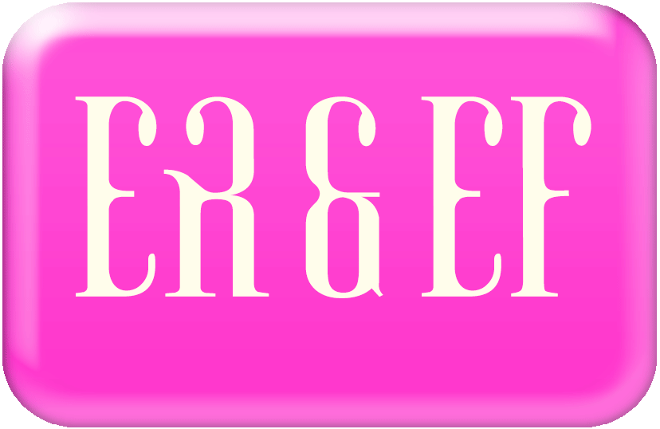
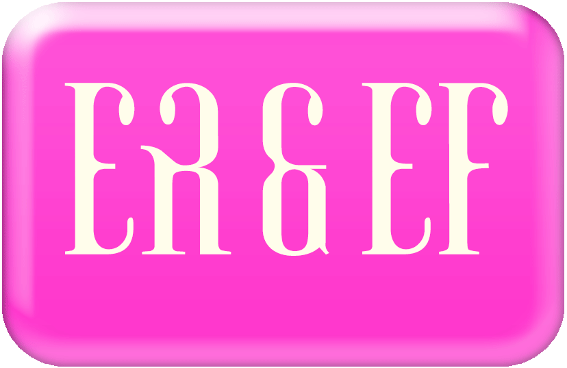

My appreciation for mainstream pop culture is genuine, but I am not a passive consumer. Drawing from both embodied experience and contemporary feminist theory, I design as a participant, cultural surveyor, and critic. From these vantage points, I obsessively watch to discern the tropes of specific media such as reality TV romance and dead girl shows. My data binging leads to my process of archiving, de/recoding, and making visible the algorithm structuring pop culture.
Fantasy, from Greek phantazein, means “to make visible.” In this thesis, I demonstrate that the fantasy-reality relationship is not an either/or. Reality TV challenges this binary directly; despite its moniker, it is more fantasy than reality. The distinction between reality and fantasy is further blurred when real women play fantasy dead girls; the plotline may be fictional but the violence against women is real. Like binge-watching, Binge fully immerses you into my pop culture world through both critique and celebration.